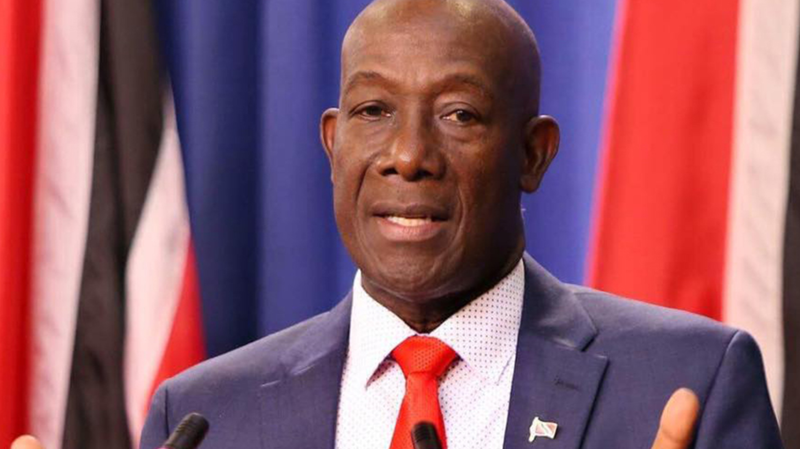
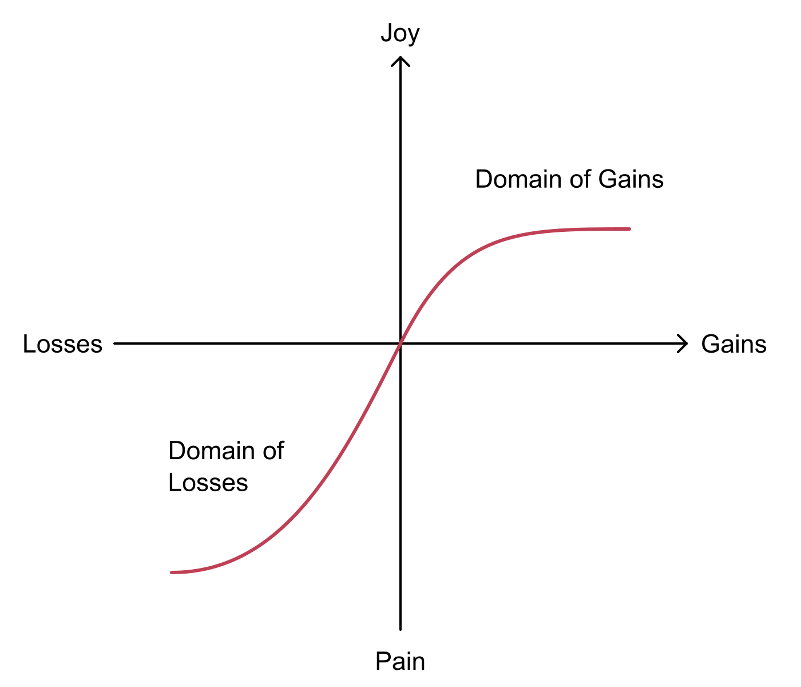
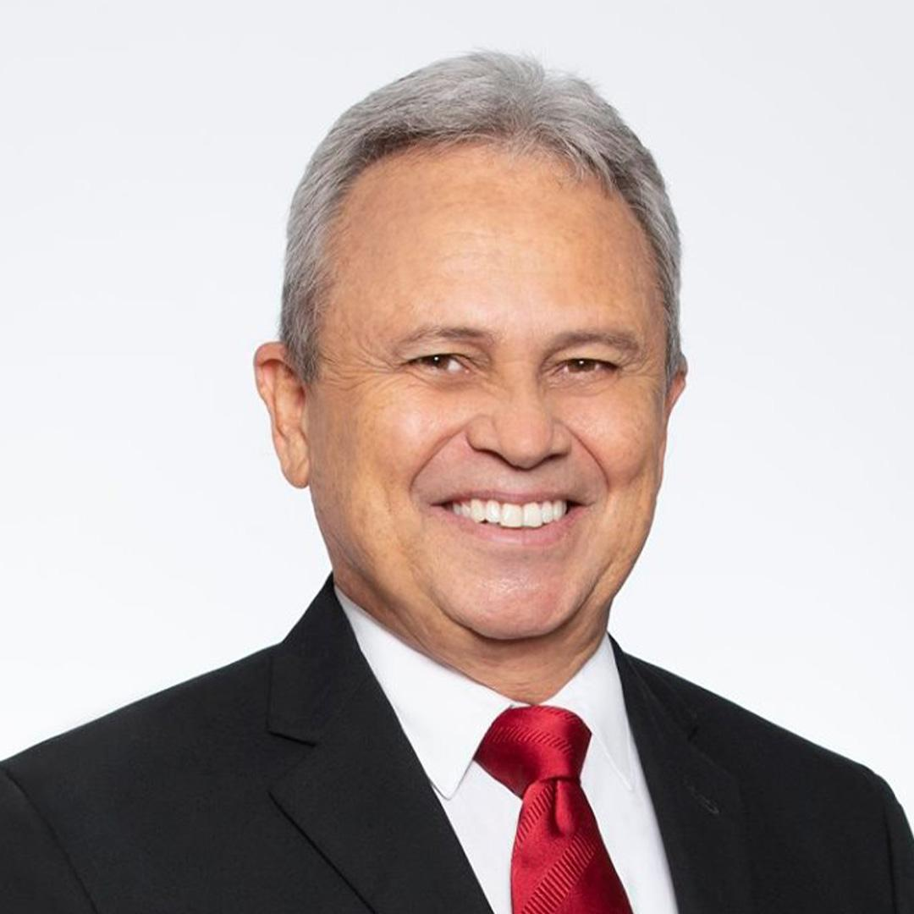

Introduction
Why would the government of the small Caribbean nation, Trinidad and Tobago (TnT), risk US backlash and engage in the Venezuelan oil sector? The government of TnT is taking these risky actions because it is in the domain of losses with respect to the status quo. Prospect theory suggests that if the government of TnT believes that if it is performing badly (that it is in the domain of losses), it will engage in risky actions to return it to the status quo (McDermott, 1992, pg. 238).

The Domain of Losses
The current government of TnT perceives itself as being in a domain of losses both economically and politically. Historically, TnT has been very dependent on its oil-and-gas production, with the sector accounting for an increasing percentage of TnT’s shrinking budgeted revenue: 9% of 60.3 billion in 2016 (Ministry of Finance, 2015, pg. 35) to 26% of 54.2 billion in 2025 (Ministry of Finance, 2024, pg. 51). Notably, this increased dependence on oil-and-gas is occurring as TnT’s competitiveness as a producer is declining. In 2013, TnT was the 6th biggest exporter of natural gas with a market share of 5.6%, whereas, as of 2023, TnT is only the 11th biggest exporter with a market share of 1.9% (Energy Institute, 2023, pg. 43). As the prime minister of TnT puts it, a lack of natural gas signifies “real trouble” for the country (Ramdass, 2024). During the same time frame, TnT’s oil production decreased from 116 thousand barrels to 72 thousand barrels daily (Energy Institute, 2023, pg. 21), and unemployment increased from 2.7% to 4.2% (World Bank Group, n.d.). Thus, the government of TnT is in a domain of losses economically due to their increasing dependence on oil-and-gas revenue, worsening global standing, and rising unemployment.
Trinidad and Tobago’s government is also in a domain of losses politically as shown by the public’s decreasing support for the current ruling party. In 2015, the current ruling party won the general elections, beating their rival by 12% of the votes (EBC, 2015, pg. 343). In 2020, however, they only won by 2% of the votes (EBC, 2020, pg. 389).
Thus, due to economic and political factors, the decision makers of TnT likely view themselves as being in a domain of losses and want to return to the status quo, a time of relative wealth and electoral dominance like in 2015. Given prospect theory, all of this suggests one thing: they are primed to do something risky.
Risky Measures
That risky action is engaging in the Venezuelan energy sector despite the potential for US backlash. Trinidad’s Minister of Finance concedes this, stating: “You cannot grow your business unless you take a risk. If you are risk averse, you will just shrink and die. The way we look at it is that the gas is available in Venezuela” (Perez, 2024). On January 28th, 2019, the Secretary of the Treasury of the United States used executive order 13850 to target the Venezuelan oil-and-gas company, PDVSA (Congressional Research Service, 2024, pg. 2), essentially telling the world that Venezuela’s oil industry was not to be engaged with, lest one run the risk of receiving secondary sanctions levied against them. In spite of this, however, Trinidad and Tobago has made a 20 year deal for the exploitation of the Cocuina-Manakin gas field, which overlaps their coastal boundary with Venezuela. Though this deal avoids direct engagement with the PDVSA, 34% of the discovered gas has been allocated to Venezuela (Ramdass, 2024), which would bolster Venezuela’s economy, providing them ith the resources to engage in the same activities that the US is trying to prevent (crime, antidemocratic behaviour, etc). Thus there is a risk of TnT receiving secondary sanctions, as the US did to Rosneft Trading S.A (a Russian firm) for operating in the Venezuelan oil sector (USDT, 2020). With the US being TnT’s biggest trading partner (USDOS, 2023) it is very likely that such sanctions would send TnT down an even sharper decline than it is already facing.
Notably, the government of TnT is currently operating legally as it has received a special licence from the US to cooperate with Venezuela. However, TnT’s licence is set to expire in 2026 (Williams, 2024) whereas their deal with Venezuela is 20 years long. Trinidad and Tobago will be left with the choice of opposing US sanctions and engaging with the Venezuelan energy sector or losing all their infrastructural and financial investments.

Conclusion
TnT’s only hope would be that the US extends the license after 2026, but with Trump being a major contender for the upcoming US elections, and the chair of the US House Foreign Affairs Committee calling for such licences to be revoked (Brennan, 2024), it is impossible to know whether or not TnT will be permitted to engage with Venezuela after 2026. Yet, in an attempt to return to the economic and political status quo of the past, a 20 year deal has been made. The political leaders of TnT have tied the country’s long-term economic prosperity to Washington’s continued leniency.
References
Sources
- Brennan, E. (2024, September 20). US lawmakers press Biden administration over Venezuela sanctions policy. S&P Global. Retrieved October 9, 2024, from https://www.spglobal.com/commodityinsights/en/market-insights/latest-news/oil/092024-us-lawmakers-press-biden-administration-over-venezuela-sanctions-policy
- Congressional Research Service. (2024, September 13). Venezuela: Overview of U.S. Sanctions Policy. CRS Reports. Retrieved September 21, 2024, from https://crsreports.congress.gov/product/pdf/IF/IF10715
- Elections and Boundaries Commission. (2015). Report on the Parliamentary General Elections 2015 (7th September 2015). Elections and Boundaries Commission. Retrieved September 21, 2024, from https://ebctt.com/wp-content/uploads/Report%20on%20the%202015%20Parliamentary%20Election.pdf
- Elections and Boundaries Commission. (2020). Report of the Elections Boundaries Commission on the Parliamentary Elections held on Monday 10th August 2020. Elections and Boundaries Commission. Retrieved September 21, 2024, from https://ebctt.com/wp-content/uploads/Report-of-the-Elections-Boundaries-Commission-on-the-Parliamentary-Elections-held-on-Monday-10th-August-2020.pdf
- Energy Institute. (2024). Statistical Review of World Energy (73rd ed.). Energy Institute. Retrieved September 21, 2024, from https://www.energyinst.org/statistical-review
- McDermott, R. (1992). Prospect theory in international relations: The Iranian hostage rescue mission. Political Psychology, 13(2), 237–263. https://doi.org/10.2307/3791680
- Ministry of Finance, Trinidad and Tobago. (2015, October 5). Budget Statement 2016 [Restoring Confidence and Rebuilding Trust: Let us do this together]. Retrieved October 9, 2024, from https://www.finance.gov.tt/wp-content/uploads/2015/10/Budget-Speech-2016.pdf
- Ministry of Finance, Trinidad and Tobago. (2024, September 30). Budget Statement 2025 [Steadfast and Resolute: Forging Pathways to Prosperity]. Retrieved October 9, 2024, from https://www.finance.gov.tt/wp-content/uploads/2024/09/Budget-Statement-2025.pdf
- Perez, A. (2024, October 3). Imbert: Dragon will bring prosperity to T&T. Trinidad Guardian. https://www.guardian.co.tt/business/imbert-dragon-will-bring-prosperity-to-tt-6.2.2124969.dcbdd40c9f
- Ramdass, A. (2024, July 26). PM hails gas deal with Venezuela | Local Business | trinidadexpress.com. Trinidad Express. https://trinidadexpress.com/business/local/pm-hails-gas-deal-with-venezuela/article_dd689bca-4ae5-11ef-a9fc-1f11760d9f93.html
- United States Department of State (USDOS). (2023, August 18). U.S. Relations With Trinidad and Tobago - United States Department of State. State Department. Retrieved September 21, 2024, from https://www.state.gov/u-s-relations-with-trinidad-and-tobago/
- United States Department of the Treasury (USDT). (2020, February 18). Treasury Targets Russian Oil Brokerage Firm for Supporting Illegitimate Maduro Regime. Treasury. Retrieved October 9, 2024, from https://home.treasury.gov/news/press-releases/sm909
- Williams, C. (2024, May 29). BP, Trinidad's NGC receive US license for gas development with Venezuela. Reuters. Retrieved October 9, 2024, from https://www.reuters.com/business/energy/bp-trinidads-ngc-receive-us-license-gas-development-with-venezuela-2024-05-29/
- World Bank Group. (n.d.). Unemployment, total (% of total labor force) (modeled ILO estimate) - Trinidad and Tobago. World Bank Open Data | Data. Retrieved October 9, 2024, from https://data.worldbank.org/indicator/SL.UEM.TOTL.ZS?locations=TT